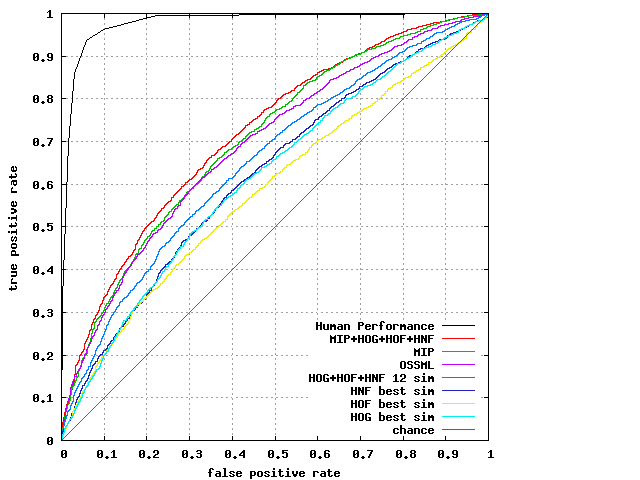

Selected Results:
For further information please see our paper.
| Method | Accuracy ± SE | AUC |
|---|---|---|
| Human Performance 1 | 94.19 | 97.8 |
| ∑(x1'x2), HOG 1 | 56.58 ± 0.80 | 61.6 |
| ∑√(x1'x2), HOF 1 | 56.82 ± 0.57 | 58.5 |
| ∑√(x1'x2), HNF 1 | 58.87 ± 0.89 | 62.1 |
| 12-sim, HOG+HOF+HNF 1 | 60.88 ± 0.77 | 65.3 |
| OSSML 2 | 64.25 ± 0.70 | 69.1 |
| MIP 3 | 64.62 ± 0.80 | 70.4 |
| MIP+HOG+HOF+HNF 3 | 65.45 ± 0.80 | 71.9 |
ROC Curves:

Creating ROC Curves:
To get access to the data, please fill in the ftp form in the downloads tab.
The following gnuplot script can be used to generate the ROC curves:
Create_ASLAN_ROC.p - link to ftp site
The script's input is a text file for each method.
Additional methods can be added to the script by adding their text files to the script command.
The lines in each text file are points on the ROC curve.
The format is:
[average true positive rate] [average false positive rate]
The current ROC files are available here: - link to ftp site
Human_Survey.txt
HOG_best_sim.txt
HOF_best_sim.txt
HNF_best_sim.txt
STIP_12_sim.txt
OSSML_best.txt
MIP.txt
MIP_STIP.txt
Methods:
- O. Kliper-Gross, T. Hassner and L. Wolf
The Action Similarity Labeling Challenge.
IEEE Transactions on Pattern Analysis and Machine Intelligence (TPAMI), 34(3), March 2012.
[PDF] - O. Kliper-Gross, T. Hassner and L. Wolf
The One Shot Similarity Metric Learning for Action Recognition.
1st International Workshop on Similarity-Based Pattern Analysis and Recognition (SIMBAD), Sep. 2011
[PDF] - O. Kliper-Gross, Y. Gurovich, T. Hassner and L. Wolf
Motion Interchange Patterns for Action Recognition in Unconstrained Videos.
12th European Conference on Computer Vision (ECCV), Oct. 2012
[PDF] [Project and Code]